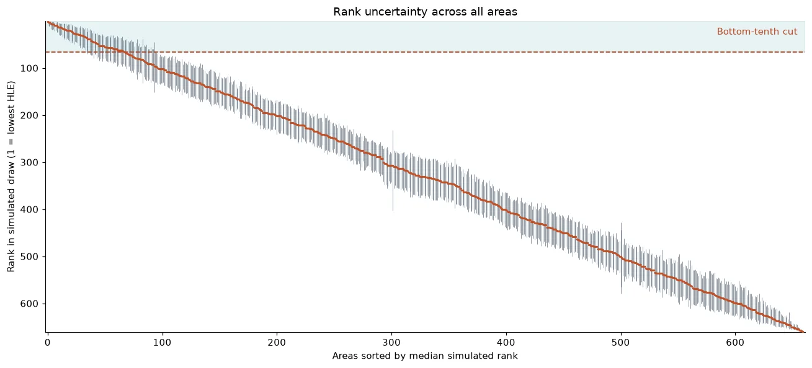
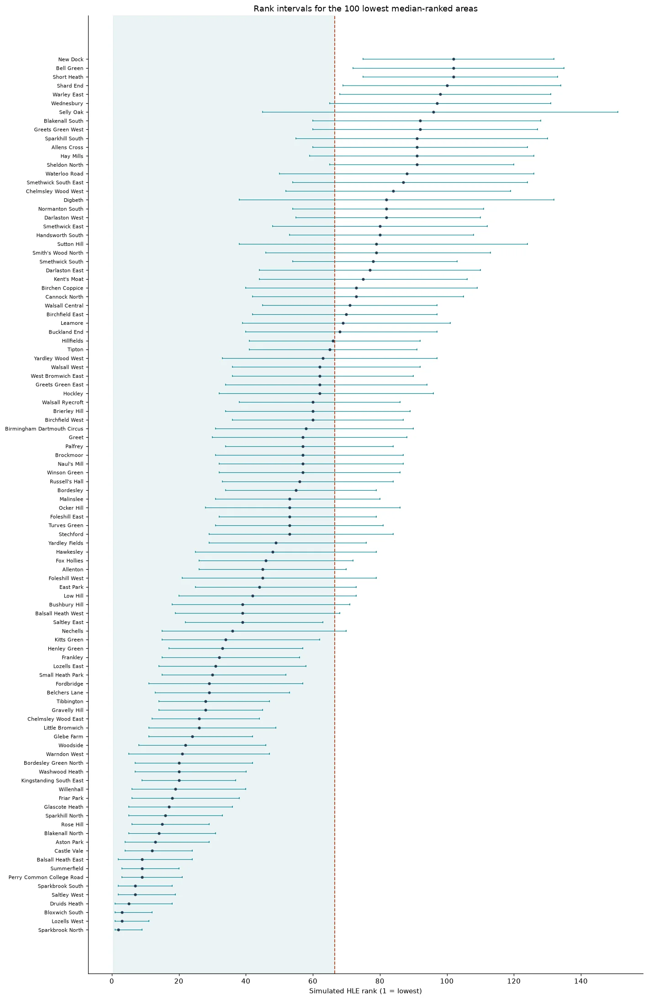
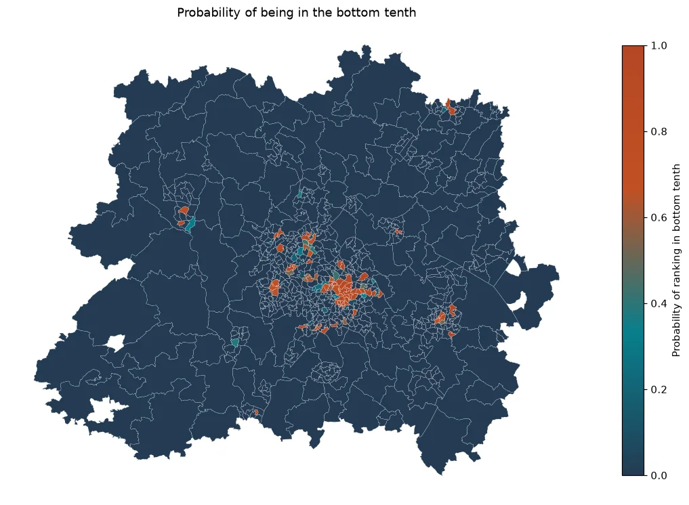

Notebook 08, a read-only record
Notebook 08 — Uncertainty and Ranking Stability
I ask which areas can honestly be described as among the lowest or highest for healthy life expectancy, and which estimates cannot be told apart by rank. The published values stay visible; I add the uncertainty around their order.
A rank describes an area-level estimate. It does not describe the people who live there.
Setting up
I use the same project discovery and data helpers as the earlier notebooks. I reuse this phase's output folder and overwrite only its named results. I check the saved uncertainty values from the earlier neighbour analysis as well as the interval calculation.
Show code (104 lines)
# Load the tools for project paths, tables, calculations and figures. from pathlib import Path import sys, json import numpy as np import pandas as pd import geopandas as gpd import matplotlib.pyplot as plt from matplotlib.colors import LinearSegmentedColormap from IPython.display import display %matplotlib inline # Find the project from the current folder; accept both saved data-folder layouts. project_folder = next(p for p in [Path.cwd(), *Path.cwd().parents] if (p / "Data/Cleaned/Wide/msoa_wide_660.csv").is_file() or (p / "data/cleaned/Wide/msoa_wide_660.csv").is_file()) data_folder = project_folder / ("Data" if (project_folder / "Data").is_dir() else "data") def project_data(relative_path): parts = Path(relative_path).parts if data_folder.name == "data": parts = (parts[0].lower(), *parts[1:]) return data_folder.joinpath(*parts) # If the dedicated Unit 3 environment exists, check that this kernel is using it. expected_environment = project_folder.parent / ".venv-unit3" if expected_environment.is_dir(): assert Path(sys.prefix).resolve() == expected_environment.resolve(), "Select the Unit 3 environment." # Locate the saved boundary file inside the project's raw-data folder. def raw_file(filename): candidates = sorted(project_data("Raw").rglob(filename)) if not candidates: raise FileNotFoundError(f"Raw source not found in the project's raw folder: {filename}") return candidates[0] def read_csv(relative): return pd.read_csv(project_data(relative)) # Restrict saved results to this notebook's named folder and expected files. output_folder = project_data("Cleaned/Uncertainty") figure_folder = output_folder / "figures" expected_root_outputs = {"rank_stability.csv", "results_summary.json", "data_dictionary.csv", "figures"} expected_figure_outputs = {"rank_intervals_all_areas.png", "rank_intervals_lowest_100.png", "probability_bottom_tenth_map.png"} assert not output_folder.is_symlink() and not figure_folder.is_symlink() assert output_folder.resolve().is_relative_to(project_folder.resolve()) assert figure_folder.resolve().is_relative_to(project_folder.resolve()) output_folder.mkdir(parents=True, exist_ok=True) figure_folder.mkdir(parents=True, exist_ok=True) assert output_folder.is_dir() and not output_folder.is_symlink() assert figure_folder.is_dir() and not figure_folder.is_symlink() assert {path.name for path in output_folder.iterdir()} == expected_root_outputs assert {path.name for path in figure_folder.iterdir()} == expected_figure_outputs assert not any(path.is_symlink() for path in output_folder.iterdir()) assert not any(path.is_symlink() for path in figure_folder.iterdir()) # Check each destination before writing; refuse unexpected names and symbolic links. def checked_output_path(folder, filename, allowed_names): assert filename in allowed_names, f"Unexpected output file name: {filename}" path = folder / filename assert path.parent.resolve() == folder.resolve() assert folder.resolve().is_relative_to(project_folder.resolve()) assert not path.is_symlink(), f"Refusing to write through a symlink: {path}" if path.exists(): assert path.is_file(), f"Expected a regular file: {path}" return path # Read each saved CSV back and check that its values survived the write. def save_csv(table, filename, index=False): path = checked_output_path(output_folder, filename, expected_root_outputs - {"figures"}) with path.open("w", encoding="utf-8", newline="") as stream: table.to_csv(stream, index=index) check = pd.read_csv(path) expected = table.reset_index() if index else table.reset_index(drop=True) pd.testing.assert_frame_equal(check, expected, check_dtype=False) # Reject non-finite JSON values and check the saved content by reading it back. def save_json(value, filename): path = checked_output_path(output_folder, filename, expected_root_outputs - {"figures"}) with path.open("w", encoding="utf-8") as stream: json.dump(value, stream, indent=2, ensure_ascii=False, allow_nan=False) assert json.loads(path.read_text(encoding="utf-8")) == value # Save the figure, check that a non-empty file exists, then display and close it. def save_figure(figure, filename): path = checked_output_path(figure_folder, filename, expected_figure_outputs) figure.savefig(path, bbox_inches="tight") assert path.is_file() and path.stat().st_size > 0 plt.show() plt.close(figure) plt.rcParams.update({"figure.dpi": 110, "savefig.dpi": 150, "font.size": 10, "axes.spines.top": False, "axes.spines.right": False}) # Simulate all 660 areas in batches of 200, with a fixed seed for repeatability. EXPECTED_AREAS, N_SIMULATIONS, BATCH_SIZE = 660, 10_000, 200 RANK_SEED, Z_CUTOFF = 20261017, 1.96 # Rank 1 is lowest HLE: ranks 1–66 and 595–660 form the two tenths. BOTTOM_CUT, TOP_FIRST = 66, 595 MIDDLE_FIRST, MIDDLE_LAST = 221, 440 PALETTE = ["#243b53", "#c25024", "#087f8c", "#b54724"] print(f"Notebook 08 settings: areas={EXPECTED_AREAS}, simulations={N_SIMULATIONS}, batch size={BATCH_SIZE}, seed={RANK_SEED}") print(f"Bottom-tenth cut: rank {BOTTOM_CUT}; top tenth begins at rank {TOP_FIRST}.") print(f"Standard error from a 95% interval divides its full width by 2 × {Z_CUTOFF}.") print("Assumption: area-level HLE errors are independent, as in the earlier neighbour-gap simulation.")
Notebook 08 settings: areas=660, simulations=10000, batch size=200, seed=20261017 Bottom-tenth cut: rank 66; top tenth begins at rank 595. Standard error from a 95% interval divides its full width by 2 × 1.96. Assumption: area-level HLE errors are independent, as in the earlier neighbour-gap simulation.
Checking the estimates and their standard errors
The earlier analysis derives each standard error from the full width of the average-HLE interval. I use that same calculation and compare it with the saved neighbour-pair values for every area.
Show code (35 lines)
# Retain all 660 areas, their HLE intervals and the existing caveat flags. wide = read_csv("Cleaned/Wide/msoa_wide_660.csv").sort_values("area_code").reset_index(drop=True) assert len(wide) == EXPECTED_AREAS and wide["area_code"].is_unique assert wide["local_area_name"].is_unique outcome = ["hle_average", "hle_average_lci", "hle_average_uci"] flags = ["hle_male_imputed", "student_dominated", "visitor_hub"] assert wide[["area_code", "local_area_name", *outcome, *flags]].notna().all().all() assert np.isfinite(wide[outcome].to_numpy()).all() assert wide["hle_average_lci"].lt(wide["hle_average"]).all() assert wide["hle_average"].lt(wide["hle_average_uci"]).all() for column in flags: assert pd.api.types.is_bool_dtype(wide[column]) and wide[column].notna().all() # Recover the standard error from the full 95% interval width divided by 2 × 1.96. area_table = wide.set_index("area_code").copy() area_table["se_average"] = (area_table["hle_average_uci"] - area_table["hle_average_lci"]) / (2 * Z_CUTOFF) assert area_table["se_average"].gt(0).all() # Cross-check these errors against Notebook 04's saved values for every area. pairs = read_csv("Cleaned/Neighbours/neighbour_pairs.csv") saved_se = pd.concat([ pairs[["area_a", "se_average_a"]].rename(columns={"area_a": "area_code", "se_average_a": "se_average"}), pairs[["area_b", "se_average_b"]].rename(columns={"area_b": "area_code", "se_average_b": "se_average"}), ], ignore_index=True) assert saved_se["area_code"].nunique() == EXPECTED_AREAS assert saved_se.groupby("area_code")["se_average"].nunique().eq(1).all() saved_se = saved_se.groupby("area_code")["se_average"].first() assert set(saved_se.index) == set(area_table.index) np.testing.assert_allclose(area_table.loc[saved_se.index, "se_average"], saved_se.reindex(area_table.index), rtol=0, atol=1e-12) # Rank lowest HLE first; equal estimates follow the already sorted area-code order. area_table["published_rank"] = area_table["hle_average"].rank(method="first").astype(int) assert area_table["published_rank"].nunique() == EXPECTED_AREAS print(f"I retain {len(area_table):,} areas; interval-derived standard errors match Notebook 04's saved pair values for all areas.")
I retain 660 areas; interval-derived standard errors match Notebook 04's saved pair values for all areas.
Simulating rank uncertainty
I draw one HLE value for every area in each run, using that area's published mean and standard error. I rank the draws from lowest to highest and calculate each area's median and central rank interval.
Show code (98 lines)
# Use a fixed seed so the same simulation can be reproduced. rng = np.random.default_rng(RANK_SEED) means = area_table["hle_average"].to_numpy(float) ses = area_table["se_average"].to_numpy(float) # Store one rank for every area in every run; rows are runs and columns are areas. simulated_ranks = np.empty((N_SIMULATIONS, EXPECTED_AREAS), dtype=np.int16) # Generate HLE draws in batches of 200 to keep temporary arrays small. for start in range(0, N_SIMULATIONS, BATCH_SIZE): stop = min(start + BATCH_SIZE, N_SIMULATIONS) # Draw each area independently using its own HLE estimate and standard error. draws = rng.normal(means, ses, size=(stop - start, EXPECTED_AREAS)) assert np.isfinite(draws).all() # The first argsort gives area positions from lowest to highest simulated HLE. order = np.argsort(draws, axis=1, kind="stable") # The second argsort returns each area's position in that order; +1 makes ranks start at 1. simulated_ranks[start:stop] = (np.argsort(order, axis=1, kind="stable") + 1).astype(np.int16) assert simulated_ranks.shape == (N_SIMULATIONS, EXPECTED_AREAS) assert simulated_ranks.min() == 1 and simulated_ranks.max() == EXPECTED_AREAS # Apply the stated probability bands; these labels remain conditional on this simulation. def band(probability, top=False): confident_label = "confidently in the highest tenth" if top else "confidently in the lowest tenth" return np.select([probability >= .95, probability >= .50, probability >= .05], [confident_label, "likely", "possibly"], default="not") # Summarise across runs for each area; the 5th–95th percentiles form a central 90% rank interval. rank_output = pd.DataFrame({ "area_code": area_table.index, "local_area_name": area_table["local_area_name"].to_numpy(), "published_hle": means, "published_rank": area_table["published_rank"].to_numpy(), "median_simulated_rank": np.median(simulated_ranks, axis=0), "rank_5th_percentile": np.quantile(simulated_ranks, .05, axis=0), "rank_95th_percentile": np.quantile(simulated_ranks, .95, axis=0), # Each probability is the share of runs placing this area inside the relevant tenth. "p_bottom_10_percent": (simulated_ranks <= BOTTOM_CUT).mean(axis=0), "p_top_10_percent": (simulated_ranks >= TOP_FIRST).mean(axis=0), "hle_male_imputed": area_table["hle_male_imputed"].to_numpy(), "student_dominated": area_table["student_dominated"].to_numpy(), "visitor_hub": area_table["visitor_hub"].to_numpy(), }) # Measure interval width in rank places and attach the probability-band labels. rank_output["rank_interval_width_places"] = rank_output["rank_95th_percentile"] - rank_output["rank_5th_percentile"] rank_output["bottom_10_confidence"] = band(rank_output["p_bottom_10_percent"]) rank_output["top_10_confidence"] = band(rank_output["p_top_10_percent"], top=True) rank_output = rank_output[[ "area_code", "local_area_name", "published_hle", "published_rank", "median_simulated_rank", "rank_5th_percentile", "rank_95th_percentile", "rank_interval_width_places", "p_bottom_10_percent", "bottom_10_confidence", "p_top_10_percent", "top_10_confidence", "hle_male_imputed", "student_dominated", "visitor_hub", ]] assert len(rank_output) == EXPECTED_AREAS and rank_output["area_code"].is_unique assert rank_output[["hle_male_imputed", "student_dominated", "visitor_hub"]].notna().all().all() # Keep the displayed probability bands in their intended order, including empty bands. bottom_band_order = ["confidently in the lowest tenth", "likely", "possibly", "not"] top_band_order = ["confidently in the highest tenth", "likely", "possibly", "not"] bottom_counts = rank_output["bottom_10_confidence"].value_counts().reindex(bottom_band_order, fill_value=0) top_counts = rank_output["top_10_confidence"].value_counts().reindex(top_band_order, fill_value=0) middle = rank_output["published_rank"].between(MIDDLE_FIRST, MIDDLE_LAST) # Count published-bottom-tenth areas whose simulated bottom-tenth probability reaches 95%. published_low_confident = int((rank_output["published_rank"].le(BOTTOM_CUT) & rank_output["p_bottom_10_percent"].ge(.95)).sum()) median_width_all = float(rank_output["rank_interval_width_places"].median()) median_width_middle = float(rank_output.loc[middle, "rank_interval_width_places"].median()) over_100 = int(rank_output["rank_interval_width_places"].gt(100).sum()) # Save the simulation settings, independence assumption and headline results alongside the ranks. summary = { "area_count": int(len(rank_output)), "simulations": N_SIMULATIONS, "batch_size": BATCH_SIZE, "seed": RANK_SEED, "rank_rule": "Rank 1 is lowest HLE; published ties follow sorted area-code order.", "standard_error_derivation": ( "se_average = (hle_average_uci - hle_average_lci) / (2 * 1.96), as in Notebook 04. " "Compared with saved se_average_a and se_average_b for all 660 areas; all matched." ), "independence_assumption": "Each area's HLE draw is independent of other areas, matching Notebook 04's noise simulation.", "bottom_tenth_cutoff_rank": BOTTOM_CUT, "top_tenth_first_rank": TOP_FIRST, "confidence_band_thresholds": { "confidently": "probability >= 0.95", "likely": "0.50 <= probability < 0.95", "possibly": "0.05 <= probability < 0.50", "not": "probability < 0.05", }, "bottom_tenth_confidence_counts": {str(k): int(v) for k, v in bottom_counts.items()}, "top_tenth_confidence_counts": {str(k): int(v) for k, v in top_counts.items()}, "published_lowest_area_count": BOTTOM_CUT, "published_lowest_confidently_in_bottom_tenth": published_low_confident, "median_rank_interval_width_overall_places": median_width_all, "middle_third_definition": f"Published HLE ranks {MIDDLE_FIRST}–{MIDDLE_LAST}; rank 1 is lowest.", "median_rank_interval_width_middle_third_places": median_width_middle, "areas_with_rank_interval_width_over_100_places": over_100, "output_folder": output_folder.relative_to(project_folder).as_posix(), } print("Bottom-tenth confidence bands:"); display(bottom_counts.rename("areas").to_frame()) print("Top-tenth confidence bands:"); display(top_counts.rename("areas").to_frame()) print(f"Of {BOTTOM_CUT} published-lowest areas, {published_low_confident} are confidently in the bottom tenth.") print(f"Median interval width overall: {median_width_all:.2f} places; published middle third: {median_width_middle:.2f} places.") print(f"Areas with intervals wider than 100 places: {over_100}.")
Bottom-tenth confidence bands:
| areas | |
|---|---|
| bottom_10_confidence | |
| confidently in the lowest tenth | 35 |
| likely | 33 |
| possibly | 27 |
| not | 565 |
Top-tenth confidence bands:
| areas | |
|---|---|
| top_10_confidence | |
| confidently in the highest tenth | 37 |
| likely | 27 |
| possibly | 38 |
| not | 558 |
Of 66 published-lowest areas, 35 are confidently in the bottom tenth. Median interval width overall: 65.00 places; published middle third: 69.52 places. Areas with intervals wider than 100 places: 8.
What the ranks show
The tables above give confidence bands for the bottom and top tenths, the count among the published-lowest areas, and rank-interval widths. The intervals keep uncertainty visible where a single ordering would look firmer than the estimates allow.
Show code (39 lines)
# Save the full-precision area results before plotting their rank intervals. save_csv(rank_output, "rank_stability.csv") # Sort the plot by median simulated rank; each vertical line spans the central 90% interval. ordered = rank_output.sort_values(["median_simulated_rank", "area_code"], kind="mergesort").reset_index(drop=True) fig, ax = plt.subplots(figsize=(12, 5.5)) x = np.arange(len(ordered)) ax.axhspan(.5, BOTTOM_CUT + .5, color="#087f8c", alpha=.09) ax.vlines(x, ordered["rank_5th_percentile"], ordered["rank_95th_percentile"], color="#243b53", linewidth=.5, alpha=.65) ax.scatter(x, ordered["median_simulated_rank"], color="#c25024", s=5, linewidths=0, zorder=3) ax.axhline(BOTTOM_CUT + .5, color="#b54724", linestyle="--", linewidth=1.2) ax.set(xlabel="Areas sorted by median simulated rank", ylabel="Rank in simulated draw (1 = lowest HLE)", title="Rank uncertainty across all areas") ax.set_xlim(-2, len(ordered) + 1) # Put the lowest numerical ranks at the top of the chart. ax.set_ylim(EXPECTED_AREAS + .5, .5) ax.text(.99, .98, "Bottom-tenth cut", transform=ax.transAxes, ha="right", va="top", color="#b54724") fig.tight_layout() save_figure(fig, "rank_intervals_all_areas.png") # Zoom in on the 100 lowest median-ranked areas and add readable area names. lowest = ordered.head(100).sort_values(["median_simulated_rank", "area_code"], ascending=[False, False], kind="mergesort").reset_index(drop=True) y = np.arange(len(lowest)) # Convert interval endpoints to distances from the median for horizontal error bars. lower = lowest["median_simulated_rank"] - lowest["rank_5th_percentile"] upper = lowest["rank_95th_percentile"] - lowest["median_simulated_rank"] fig, ax = plt.subplots(figsize=(13, 20)) ax.axvspan(.5, BOTTOM_CUT + .5, color="#087f8c", alpha=.08) ax.errorbar(lowest["median_simulated_rank"], y, xerr=np.vstack([lower, upper]), fmt="o", color="#243b53", ecolor="#087f8c", markersize=3, capsize=1.5, linewidth=.8) ax.axvline(BOTTOM_CUT + .5, color="#b54724", linestyle="--", linewidth=1.2) ax.set_yticks(y, lowest["local_area_name"], fontsize=7) ax.set(xlabel="Simulated HLE rank (1 = lowest)", title="Rank intervals for the 100 lowest median-ranked areas") ax.invert_yaxis() fig.tight_layout() save_figure(fig, "rank_intervals_lowest_100.png") print(f"Saved all-area intervals and a named zoom for {len(lowest)} areas.")


Saved all-area intervals and a named zoom for 100 areas.
Mapping the chance of being in the bottom tenth
I use the same boundary source, code-field check and projected boundaries as Notebook 04. Colour shows the simulated probability of an area ranking in the bottom tenth; it is not a map of certain outcomes.
Show code (30 lines)
# Load the saved boundaries and verify one valid geometry for every ranked area. boundary_path = raw_file("ons_msoa21_boundaries_exploratory_west_midlands.geojson") boundaries = gpd.read_file(boundary_path) boundary_code_field = next(field for field in boundaries.columns if field != "geometry" and boundaries[field].astype(str).str.fullmatch(r"[EW]020\d{5}").all()) assert boundaries[boundary_code_field].is_unique and len(boundaries) == EXPECTED_AREAS assert set(boundaries[boundary_code_field]) == set(rank_output["area_code"]) assert boundaries.crs is not None and boundaries.geometry.notna().all() assert boundaries.geometry.is_valid.all() # Use British National Grid and join probabilities by area code, not row position. boundaries_by_code = boundaries.set_index(boundary_code_field).to_crs(27700) assert boundaries_by_code.crs.to_epsg() == 27700 and "MSOA21NM" in boundaries_by_code.columns map_data = boundaries_by_code.join( rank_output.set_index("area_code")[["p_bottom_10_percent"]], how="left", validate="one_to_one") assert map_data["p_bottom_10_percent"].notna().all() # Map the probability on a fixed 0–1 scale; the colour shows simulated bottom-tenth membership. cmap = LinearSegmentedColormap.from_list( "unit_2_palette", ["#243b53", "#087f8c", "#c25024", "#b54724"]) fig, ax = plt.subplots(figsize=(10, 8)) map_data.plot(column="p_bottom_10_percent", cmap=cmap, vmin=0, vmax=1, linewidth=.12, edgecolor="#ffffff", ax=ax) scalar = plt.cm.ScalarMappable(cmap=cmap, norm=plt.Normalize(0, 1)) scalar.set_array([]) fig.colorbar(scalar, ax=ax, shrink=.75, label="Probability of ranking in bottom tenth") ax.set_title("Probability of being in the bottom tenth") ax.set_axis_off() fig.tight_layout() save_figure(fig, "probability_bottom_tenth_map.png") print(f"Mapped bottom-tenth probabilities for {len(map_data)} MSOA areas using Notebook 04 boundaries.")

Mapped bottom-tenth probabilities for 660 MSOA areas using Notebook 04 boundaries.
Saving the outputs
I save one row per area, the figures, a data dictionary, and a JSON summary. The summary records the interval derivation, independence assumption, confidence-band rules and headline counts.
Show code (79 lines)
# Define the saved rank columns, units and retained caveat flags. rank_dictionary = { "area_code": ("MSOA21 identifier", "Unique area code used by the joined table"), "local_area_name": ("text", "Familiar name of the MSOA area"), "published_hle": ("years", "Published average healthy life expectancy estimate"), "published_rank": ("rank", "Rank of published estimate; 1 is lowest and ties follow area-code order"), "median_simulated_rank": ("rank", "Median rank across simulated HLE draws"), "rank_5th_percentile": ("rank", "5th percentile of simulated ranks"), "rank_95th_percentile": ("rank", "95th percentile of simulated ranks"), "rank_interval_width_places": ("places", "95th percentile rank minus 5th percentile rank"), "p_bottom_10_percent": ("probability 0–1", "Share of draws with rank at or below the bottom-tenth cut"), "bottom_10_confidence": ("category", "Band for bottom-tenth probability using the stated thresholds"), "p_top_10_percent": ("probability 0–1", "Share of draws with rank at or above the top-tenth first rank"), "top_10_confidence": ("category", "Band for top-tenth probability using the stated thresholds"), "hle_male_imputed": ("boolean", "Male HLE imputation flag; retained, not dropped"), "student_dominated": ("boolean", "Student-area flag; retained, not dropped"), "visitor_hub": ("boolean", "Visitor-hub flag; retained, not dropped"), } dictionary_rows = [ {"file":"rank_stability.csv","column":c,"meaning":rank_dictionary[c][1], "unit":rank_dictionary[c][0],"missing_rule":"No missing values"} for c in rank_output.columns ] # Convert nested summary fields into dotted paths for the data dictionary. def flatten_json(value, prefix=""): if isinstance(value, dict): for key, child in value.items(): yield from flatten_json(child, f"{prefix}.{key}" if prefix else str(key)) elif isinstance(value, list): if value: for child in value: yield from flatten_json(child, f"{prefix}[]") else: yield prefix, [] else: yield prefix, value summary_meanings = { "area_count":("areas","Areas included in the ranking simulation"), "simulations":("draws","Independent HLE draws used for the ranking simulation"), "batch_size":("draws","Simulations generated in each batch"), "seed":("seed","Fixed NumPy random generator seed"), "bottom_tenth_cutoff_rank":("rank","Highest rank included in the bottom tenth"), "top_tenth_first_rank":("rank","Lowest rank included in the top tenth"), "published_lowest_area_count":("areas","Areas among the lowest published estimates"), "published_lowest_confidently_in_bottom_tenth":("areas","Published-lowest areas with bottom probability at least 0.95"), "median_rank_interval_width_overall_places":("places","Median 90% rank-interval width across all areas"), "median_rank_interval_width_middle_third_places":("places","Median 90% rank-interval width in published middle third"), "areas_with_rank_interval_width_over_100_places":("areas","Areas whose rank interval is wider than 100 places"), "output_folder":("project-relative path","Folder containing this notebook's outputs"), } # Describe both headline values and the recorded method and probability-band rules. for key, value in flatten_json(summary): if key in summary_meanings: unit, meaning = summary_meanings[key] elif key.startswith(("bottom_tenth_confidence_counts.", "top_tenth_confidence_counts.")): unit, meaning = "areas", f"Count in confidence band {key.split('.')[-1]}" else: unit, meaning = "text or rule", "Recorded method, assumption, threshold or definition" dictionary_rows.append({"file":"results_summary.json","column":key,"meaning":meaning, "unit":unit,"missing_rule":"No missing values"}) for c, (unit, meaning) in { "file":("text","Filename described by this row"), "column":("text","CSV column or dotted JSON path; [] marks repeated items"), "meaning":("text","What the field records"), "unit":("text","Measurement unit or value type"), "missing_rule":("text","Meaning of a blank value"), }.items(): dictionary_rows.append({"file":"data_dictionary.csv","column":c,"meaning":meaning, "unit":unit,"missing_rule":"No missing values"}) # Check complete dictionary coverage before saving through the checked helpers. data_dictionary = pd.DataFrame(dictionary_rows) assert not data_dictionary.duplicated(["file","column"]).any() assert set(data_dictionary.query("file == 'rank_stability.csv'")["column"]) == set(rank_output.columns) assert set(data_dictionary.query("file == 'results_summary.json'")["column"]) == {k for k,_ in flatten_json(summary)} save_json(summary, "results_summary.json") save_csv(data_dictionary, "data_dictionary.csv") print(f"Saved {len(rank_output)} area rows, {len(list(figure_folder.glob('*.png')))} figures and a complete data dictionary.")
Saved 660 area rows, 3 figures and a complete data dictionary.
# Display the headline uncertainty results and the ethics questions they address. print("Ethics questions addressed: Q4, Q14 and Q20.") print(f"Median interval width overall: {median_width_all:.2f}; middle third: {median_width_middle:.2f}.") print(f"Published-lowest areas confidently in the bottom tenth: {published_low_confident} of {BOTTOM_CUT}.") print(f"Areas with intervals wider than 100 places: {over_100}.")
Ethics questions addressed: Q4, Q14 and Q20. Median interval width overall: 65.00; middle third: 69.52. Published-lowest areas confidently in the bottom tenth: 35 of 66. Areas with intervals wider than 100 places: 8.
What this means ethically
For Q14, the intervals show whether a single rank would make the evidence look more certain than it is. The bottom-tenth probabilities distinguish areas whose estimates repeatedly fall in that group from areas whose rank moves across its boundary.
For Q4 and Q20, the risk is an inaccurate description of a place. I keep the ranking question, name the areas, retain the imputation and context flags, and show uncertainty alongside the estimate. This simulation does not turn area-level associations into statements about residents or causes.